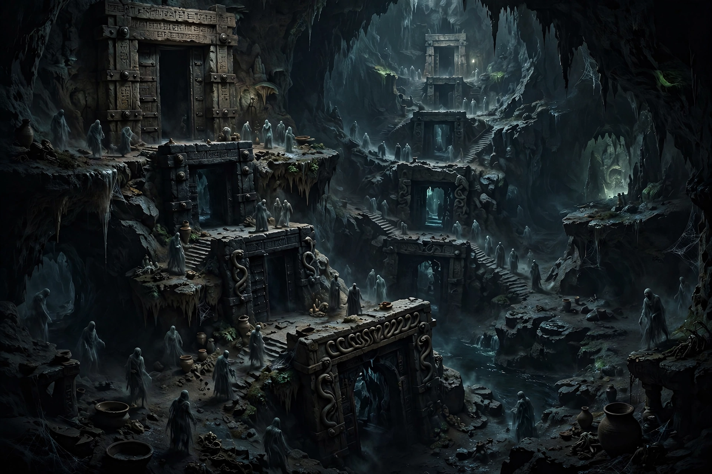

| Type | Underworld / realm of the dead |
|---|---|
| Rulers | Ereshkigal and Nergal |
| Other names | Arali, Irkalla, Kigal, Kukku |
| Culture | Sumerian and Akkadian religion |

In Sumerian mythology, Kur is the dark, dreary underworld — the abode of the dead located deep beneath the earth. The word also denotes "mountain" and "foreign land" in Sumerian, reflecting the belief that the realm of the dead lay beyond or beneath the mountains of the east. In Akkadian texts the underworld is known by names including Arali and Irkalla.
Kur was imagined as a gloomy cavern where the dead, regardless of their conduct in life, led a shadowy existence, eating dust and clay. Entry was through seven gates, guarded by the gatekeeper Neti, at each of which a visitor had to surrender an item of clothing or jewellery — as in the myth of Inanna's descent, in which the goddess is stripped of her regalia and judged by the Anunnaki of the underworld. The dead were ruled by the goddess Ereshkigal, "Queen of the Great Earth", and later by her husband Nergal. Judges of the dead recorded the fates of the shades, and offerings from the living (kispum) sustained deceased ancestors.
Kur appears in several myths. In Gilgamesh, Enkidu and the Netherworld, Enkidu descends to retrieve the hero's lost playthings and reports the conditions of the dead. In the prelude to Gilgamesh and the Bull of Heaven, and in Enlil and Ninlil, the underworld is the destination of banished deities. Originally the term may also have referred to a primeval cosmic mountain or a monstrous creature of the waters beneath the earth, slain in some traditions by the god Ninurta.